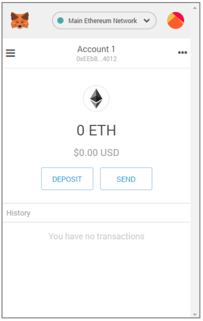
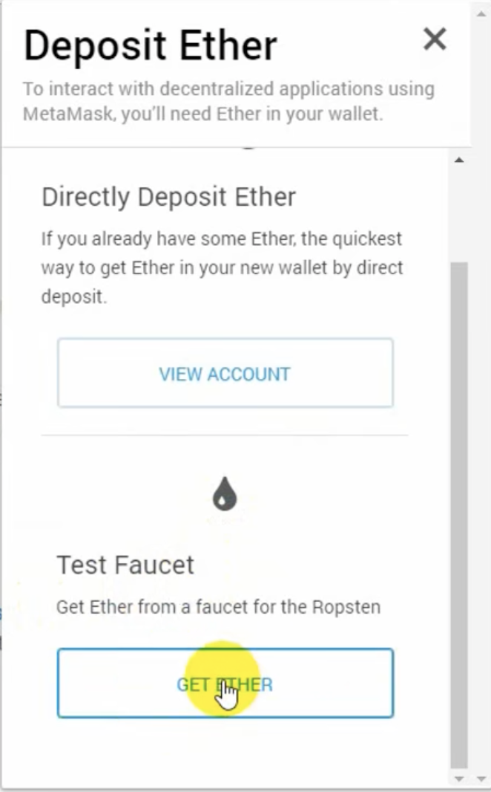
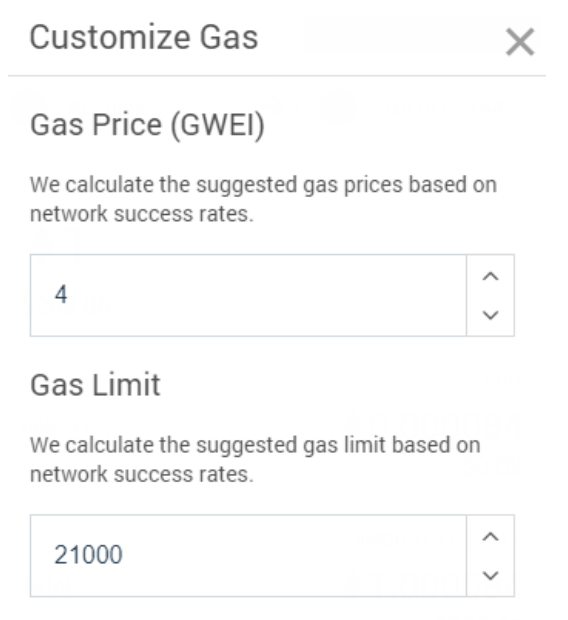
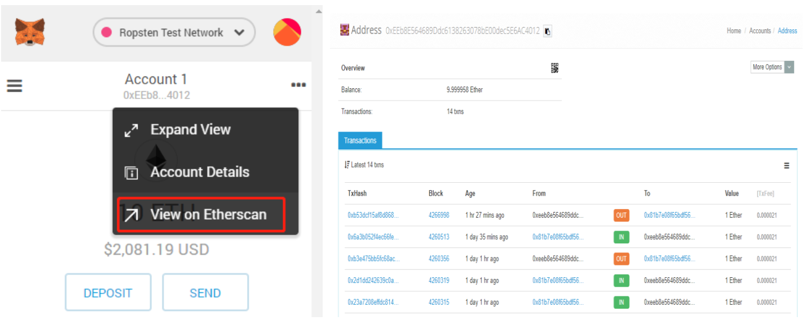
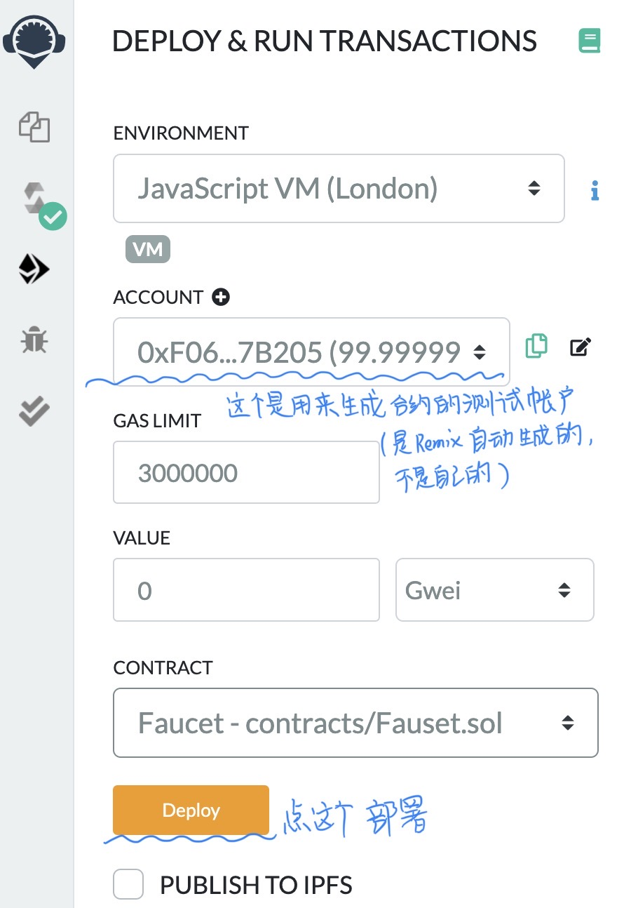
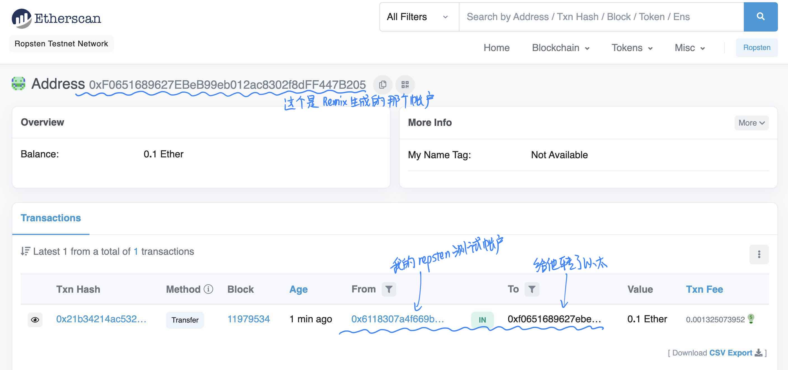
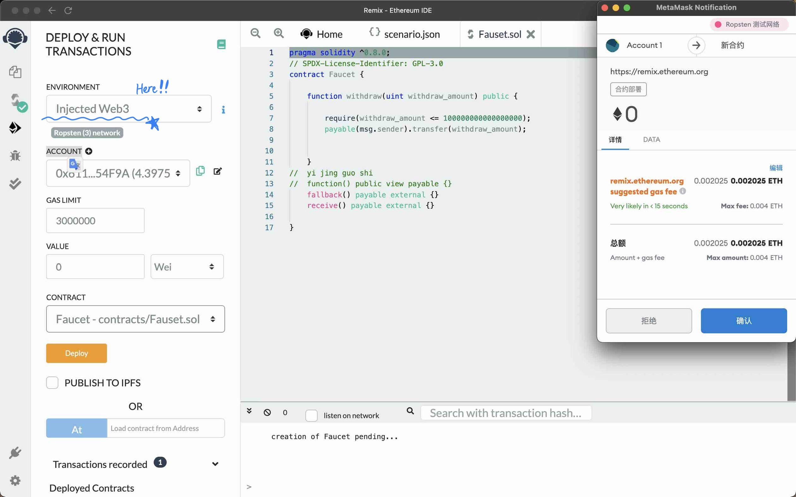
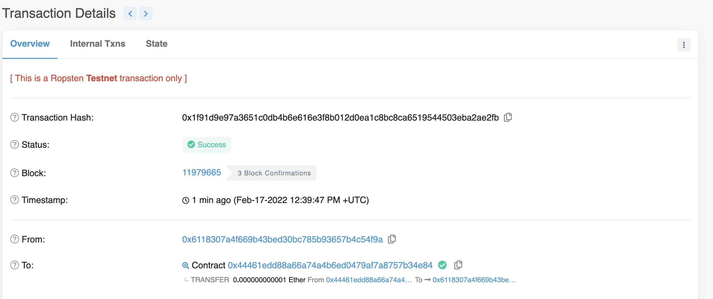
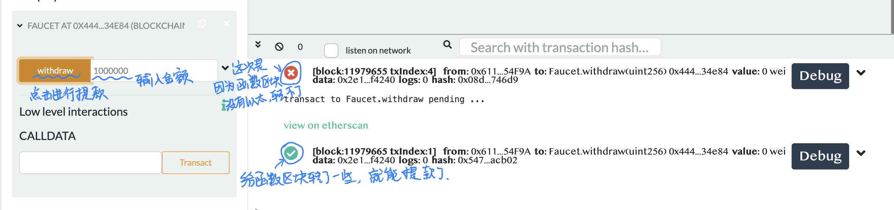

2022.2.17
钱包、测试网络和简单交易
• 以太坊的货币单位称为以太，也称为ETH或符号Ξ
1 ether = 10^18 wei
以太的值总是在以太坊内部表示为以wei表示的无符号整数值。
以太的各种单位都有一个使用国际单位制(SI)的科学名 称，和一个口语名称。
| 值(wei) | 指数 | 通用名称 | SI名称 |
|---|---|---|---|
| 1 | $$10^0$$ | wei | wei |
| 1,000 | $$10^1$$ | babbage | kilowei or femtoether |
| 1,000,000 | $$10^2$$ | lovelace | megawei or picoether |
| 1,000,000,000 | $$10^3$$ | shannon | gigawei or nanoether |
| 1,000,000,000,000 | $$10^4$$ | szabo | microether or micro |
| 1,000,000,000,000,000 | $$10^5$$ | finney | milliether or mill |
| 1,000,000,000,000,000,000 | $$10^6$$ | ether | ether |
| 1,000,000,000,000,000,000,000 | $$10^7$$ | grand | kiloether |
| 1,000,000,000,000,000,000,000,000 | $$10^8$$ | megaether |
以太坊钱包是我们进入以太坊系统的门户。它包含了私钥，可以代表我们创建和广播交易。
• 私钥(PrivateKey) 以太坊私钥事实上只是一个256位的随机数，用于发送以太的交易中创建签名来证明自己对资金的所有权。
• 公钥(PublicKey) 公钥是由私钥通过椭圆曲线加密secp256k1算法单向生成的512位 (64字节)数。
• 地址(Address) 地址是由公钥的 Keccak-256 单向哈希，取最后20个字节(160位) 派生出来的标识符。
内容——账户名称:Account1 ——以太坊地址 ——账户余额:0 ETH

切换网络
Main Network(Network ID: 1)：主要的、公共的，以太坊区块链。真正的ETH，真正的价值，真正的结果。
Custom RPC：允许将 Netmask连接到意兼容eth的RPC接口的点。该节点可以是任何公共或私人区块链的一部分。
获取测试以太
钱包有了，地址有了，接下来需要做的就是为我们的钱包充值。 我们不会在主网络上这样做，因为真正的以太坊需要花钱。
以太坊测试网络给了我们免费获取测试以太的途径:水龙头 ( faucet )
现在，我们将尝试把一些测试以太充入我们的钱包。
下图是Ropsten测试网络的水龙头，直接点击获取，但是有稳定性不好。也可以用https://www.rinkeby.io/#stats，但是比较麻烦。

Gas编辑选项
Metamask 计算了最近成功交易的平均 gas 价格为4 GWEI
发送基本交易的 gas 成本是21000个 gas单位
花费的最大 ETH 量是 4 * 21000 GWEI = 84000 GWEI = 0.000084ETH
做 1 ETH 交易成本为 1.000084 ETH
从水龙头请求多一些的以太，如果有2 个ETH的余额，我们就可以再试一次

搜索地址的交易记录：

动态的查询现在网络上gas的信息：https://ethgasstation.info/
打开浏览器：https://remix.ethereum.org
这个版本是2018年尚硅谷网课的：
// Fauset.sol
// Our first contract is a faucet:
pragma solidity >=0.4.19;
contract Fauset {
// Give out ether to anyone who asks
function withdraw(uint withdraw_amount) public {
// Limit withdrawal amount
require(withdraw_amount<=100000000000000000);//0.1 ether
// Send the amount to the address that requested it
msg.sender.transfer(withdraw_amount);
}
function () public payable{} // 回退函数, 假如用户调用的方法在本合约中没实现, 就用这个函数
}
这个是2022年2月从网上找到的：
pragma solidity ^0.8.0;
// SPDX-License-Identifier: GPL-3.0
contract Faucet {
function withdraw(uint withdraw_amount) public {
require(withdraw_amount <= 100000000000000000);
payable(msg.sender).transfer(withdraw_amount);
}
// yi jing guo shi
// function() public view payable {}
fallback() payable external {}
receive() payable external {}
}
下边是2022年2月17日运行记录
注意编译的时候，需要配置对编译器版本
在remix上传节点的时候，编译通过后，需要部署。下图是根据Remix自动生成的账户进行部署的截图


【失败】接下来我尝试，向生成的函数对应的地址转了0.1ether但是还是不能进行正常工作。
【成功】原来Remix的环境设置成Javascript VM，生成了自动的账户，是不能与外界（主链或任何测试链）连接的，只能属于Remix内部，需要把环境改成Injected Web3就好啦！现在生成的函数就是自己账户对应的函数了。


